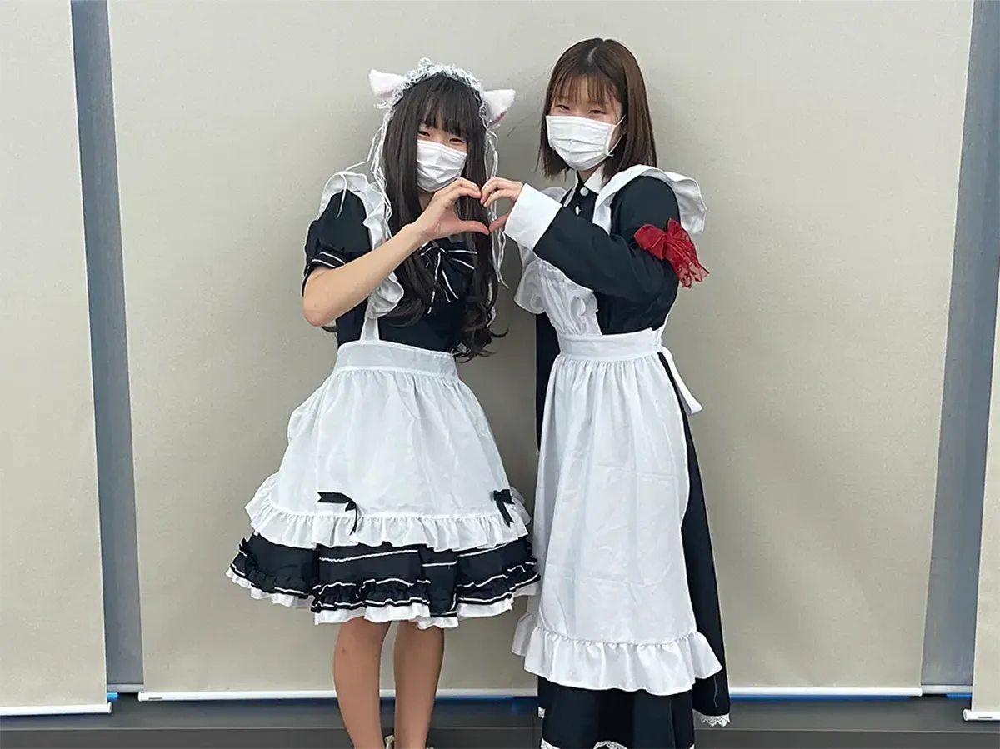
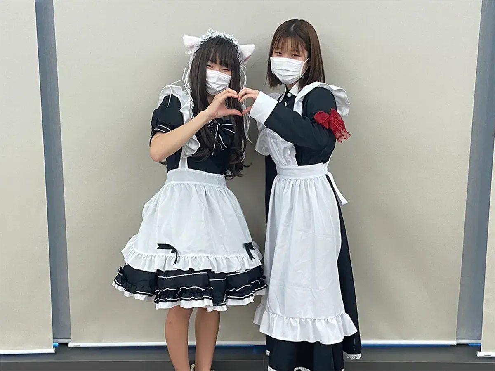

学科対抗！仮装大会

各学科の学生がアニメやゲームなどのコスプレを楽しみながら歩き回っています！学内を探索し目に留まった一番素晴らしいコスプレに投票しましょう！上位３学科には素敵な景品が用意されています！

電波祭とは、毎年10月末に行われる東京電子専門学校の学園祭です。 毎年多くの飲食店や展示、各学科の特色ある体験ブースなどがあります。 東京電子専門学校に興味を持っていただいた方は、会場まで是非お越しください。 皆様のお越しを心よりお待ちしております。
「学園祭は楽しむもの」
この異常気象。ここ10年間の平均気温は前年を上回り、観測史上最も暑くなりました。世界的にも山火事が多く、蒸発水分量の増加により激しい降雨と
洪水が発生しました。農漁業も被害を受け、海水の体積増加、極地氷床は始め、海面上昇、沿岸住環境は不可逆的に悪化しました。
健康面でも感染症増加。コロナとインフルエンザ感染拡大が始まっています
が、手洗い、うがい、「三密を避ける」という、従来言われてきた感染経路を遮断すれば、まず安心と考えて、学園祭を大いに楽しんで、一生の思い出を作りましょう！！
学校長 伴場次郎
こんにちは、学園祭実行委員長の堀田祥伍です。
今年の学園祭はコロナ開けから2年目の開催となり、企画に関しても去年も大好評だった「競三輪」や「ビンゴ大会」があったり、学科の垂れ幕も学科対抗の企画になるなど、去年からさらにアップグレードした物をお見せできると思います。
また今年のテーマである「TEC FESTA」の“FESTA" にはイタリア語で祭典の意味があり、これには学園祭をより華やかに、楽しくという意味が込められているので、みなさんもぜひ今年の学園祭も楽しんでいってください！
実行委員長 堀田祥伍

各学科の学生がアニメやゲームなどのコスプレを楽しみながら歩き回っています！学内を探索し目に留まった一番素晴らしいコスプレに投票しましょう！上位３学科には素敵な景品が用意されています！
学内に各学科が趣向を凝らしたクリスマスツリーが設置されます！お気に入りのツリーを２本見つけて投票してね！
昨年好評だった各学科が作成した垂れ幕が、今年はコンテストになりました！１階エントランスに掲示していますので是非お気に入りを見つけてください！１人２票お願いします